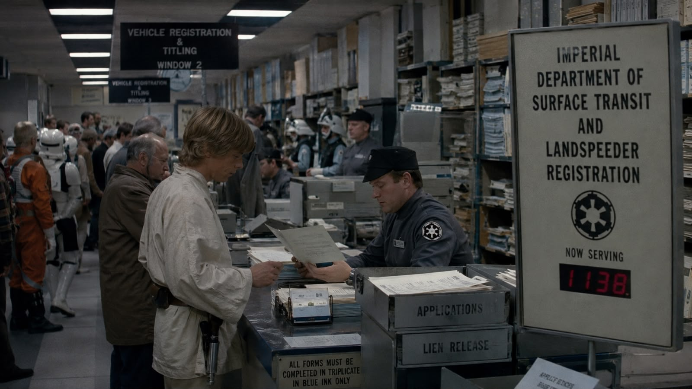
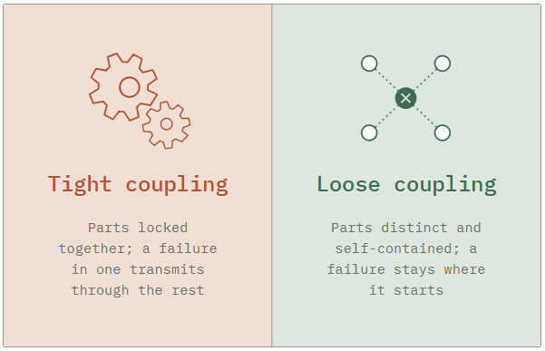
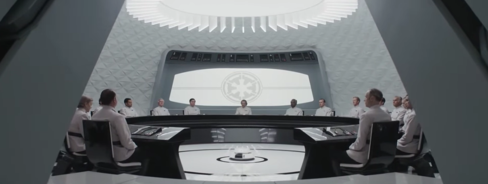
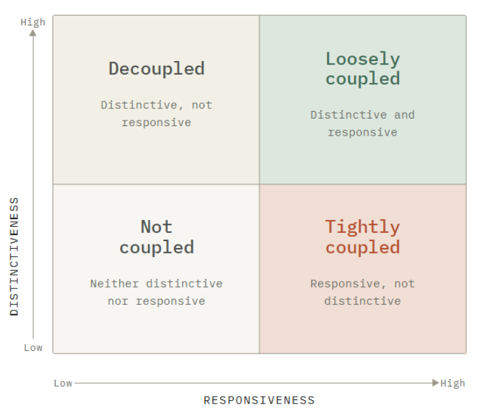

What a Star Wars streaming series can tell us about organizations
When I was a kid, I loved Star Wars (I still do). I remained puzzled, however, about how the Empire worked administratively on a day to day basis. If Luke had sold his landspeeder in A New Hope, would he have needed a lien release form from the Imperial Department of Surface Transit and Landspeeder Registration? Would they only take a money order?. I wasn't alone in thinking that the Disney series Andor made the Empire feel real by letting us see its paperwork, budget fights, promotion politics, and disciplinary measures that didn't involve asphyxiation.

I recently rewatched the series and came away with a more nuanced view. If we only appreciate that the Empire becomes "realer" because we see its bureaucratic innards, we miss a more interesting conclusion. The series lets us watch two organizations work messily through the same problem: which parts of a system get to move without waiting for the rest, and which parts have to move together. The Empire and the Rebel Alliance answer it differently, and the show is more interested in what each answer costs than in which one is correct.
In a 1976 paper on schools, Karl Weick called this “loose coupling”1. He argued that organizations get described as tightly wired machines when they are held together much more loosely, and that the looseness is a system feature, not a flaw. A loosely coupled system localizes its problems, so a breakdown in one part is contained instead of cascading. It delegates decisions to the local level, so each part adapts without waiting for approval from above. Overhead falls, since less central authority has to be maintained. The trade-offs are the mirror image of the benefits. A good idea in one unit doesn't spread. Standards drift. When the whole system must change at the same time, in a standardized manner, it can't.

The rebel network headed by Luthen Rael takes loose coupling to its survival-driven extreme. The people closest to Luthen barely know who the field assets (such as Cassian Andor, the series' namesake) are, while the field assets don't know who Luthen answers to. Field crews are assembled from people with no shared history and no reason to trust each other beyond their shared anti-Imperial sentiment. Nobody knows everything that's going on, and that's the point: when the Empire's security apparatus, the ISB, catches one thread, the exposure to the rest of the organization is close to zero.
Andor is sharper than most spy fiction in that Luthen takes full advantage of this. He allows a field cell to walk into an ambush rather than warn its people, because warning them would expose his source inside the ISB. Read that as a moral horror, which the show clearly intends. But read it also as an operating policy: he lets one component fail so the failure stays where it is. What makes the trade worth it is what he is protecting. That source is the one tight connection the rebels have, and it runs into the Empire rather than through their own network, which leaves Luthen with a better picture of Imperial security than most of Imperial security has.
Luthen's organization is one cell inside a larger and equally loose superstructure. Saw Gerrera, the militant insurgent who leads another faction, rants about how the different subgroups (separatists, Republicans, sectorists, partitionists) can't be in the same room. The script delivers the rant as a joke, but it's an accurate description of what a loosely coupled movement can and cannot do. It can survive being hunted. It cannot mount a fleet action, and it cannot copy its own successes, because a raid that works for one crew stays with that crew. Every cell that stays safe by staying isolated is also a cell that can't be told to attack on Tuesday.
Which brings me back to that childhood curiosity. We assume the Empire is the most tightly run organization in the galaxy, and it isn't. The ISB, ordinary subregional administration, private security outfits in fringe territories, and the prison-labor system are only loosely stitched together. Dedra Meero, an ISB bureaucrat and one of the show's villain protagonists, spends much of her screen time sparring with a colleague over jurisdiction instead of pursuing the Rebellion. The bureaucracy-loving Syril Karn spends two seasons falling through the gaps between siloed agencies. What reads as institutional comes from scale and paperwork, not from coordination.

The Empire isn't loosely coupled across the board either, and that's because coupling was never one dial. Fourteen years after the 1976 paper, Weick and J. Douglas Orton rebuilt the idea on two dimensions2. Distinctiveness is whether the parts keep their own character. Responsiveness is whether they react to each other. Parts that are both are loosely coupled. Parts that are responsive without being distinctive are tightly coupled. Parts that are distinctive without being responsive are decoupled, which is a different condition altogether.

That grid sorts the show. The gap Syril keeps falling into is decoupling: the agencies are distinct and they do not answer each other. Saw's factions are distinct and unresponsive too, which is why the movement absorbs losses and cannot plan an offensive. Luthen's cells keep their own character and still move when he sends a signal, which makes his network loosely coupled in the strict sense, and better organized than the apparatus hunting it.
Where the Empire is tightly coupled, the coupling runs through decree rather than through coordination, and the show is careful about the difference. A central directive issued after a single successful raid lands on the prison-labor system as sentences that suddenly never end, enforced down the chain with no local input, no warning, and no way to absorb the shock. The prisons turn responsive and stop being distinctive, which is tight coupling in the exact sense. It makes the Empire look powerful in the moment and brittle over a season, because the structure turns one bad decision at the center into a catastrophe at every edge.
Dedra is the Imperial version of the argument for tightening. Her method is an attempt to build one picture of the rebel network out of intelligence sitting in separate files in separate offices, and for two seasons the institution treats her as a nuisance for trying. The Empire can compel obedience down a chain, but it cannot get two of its own offices to share what they know.
Season two pays all of this off through Mon Mothma, a senator in the Imperial Senate who is secretly aiding the rebels. She turns the loose set of sympathetic factions into an organization that can act as one body, on one signal, at scale, and she does it through an alliance that merges politics with family and through obscure loopholes in banking laws that let her launder money. The series shows what that costs in concrete terms: her relationship with her daughter, her oldest friendships, and her standing in the institution that has been her whole world. By the finale something recognizable as the Alliance exists (it had to, since cells that don't talk to each other can't fight a war, and we already know how the war ends).
That's a more interesting story than "bureaucracy bad, rebels good." It's the trade-off that real-life organizations face, usually at the point where they stop being a group of people who like each other and share a loose goal, and start being an entity with a headcount and real responsibilities. In the end, Andor doesn't give the final answers - that's what the movies are for. But it makes sure you see what people gave up to become the Rebellion, and it's worth reflecting on what real people sacrifice when they commit to an organization.